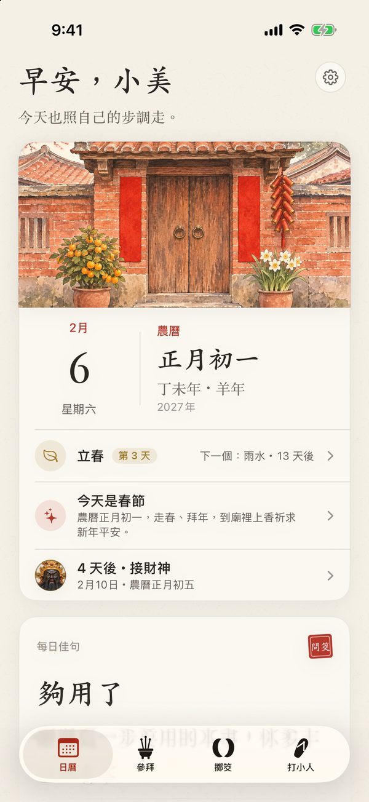

問筊Wenjiao
台灣廟宇文化的模擬與體驗。
功能Features
擲筊、參拜、抽籤、打小人，還有每天的農曆與節氣。
照著廟裡的步驟來：選一位神明、擺供品、上香、擲筊、抽籤，每一步都自己動手。



- 擲筊
- 點一下、往上滑，或握緊手機搖一搖，3D 的筊杯翻轉、落地、彈跳，聲音與震動跟著每一次碰撞。一般請示擲一次就有結果，慎重請示要連續三次聖杯才算數。
- 廟祝
- 不懂就問廟祝：怎麼擲、問題怎麼問、筊立起來怎麼辦，八個常見的問題，點了就回答。
- 參拜
- 十二位神明各有自己的供桌。一百四十多樣供品，從水果、糕粿到鮮花、金紙，拖到桌上想放的位置，再把香插進香爐，按住畫面合掌。
- 修行
- 敲木魚、打坐，累積虔誠值來換供品，虔誠值不能購買。修行位階一共九階，升上去會多出供桌的擺設與款式。
- 抽籤
- 點供桌上的籤筒，向眼前這位神明抽籤。四套籤詩：六十甲子籤、觀音一百籤、關帝一百籤、月老聖籤，直排顯示，附白話大意、提醒與分項參考。
- 打小人
- 流傳在香港與台灣的民俗，多在驚蟄前後。五個紙做的小人、三十樣道具，也可以直接用手，打夠了，就送進火盆。寫在胸前的綽號不會保存。
- 日曆
- 每天一張日曆紙：國曆、農曆、干支與生肖、二十四節氣、節日、神明聖誕與初一十五。每日佳句每次打開都會換一句，也可以開每天的佳句提醒與節氣提醒。
- 紀錄
- 可以記下當時問的事，日後補寫「後來怎麼了」。紀錄可以篩選、看統計，也可以關掉不存。
- 小工具
- 「今日」小工具可以放在主畫面或鎖定畫面，「擲筊」小工具點一下就擲一次，不用打開 App。
使用前先知道Before you start
- 帳號
- 不用註冊帳號
- 資料
- 只存在你的手機上
- 廣告與追蹤
- 沒有
- 費用
- 免費下載，會員訂閱可選
- 網路
- 平常不需要連網
- 裝置
- iPhone
- 系統
- iOS 26 或以上
- 語言
- 繁體中文
- 上架
- 預計 2027 年 1 月初
擲筊、抽籤、參拜都免費，抽籤各面向的完整解說是會員內容。供桌上的箱子可以自由「支持開發團隊」（App 內購買），不會換到任何東西。
擲筊與抽籤的結果由手機上的亂數決定，3D 動畫只是把結果演出來，籤詩的白話解說是我們寫的其中一種讀法，僅供參考。醫療、法律、財務等重要的決定，請以專業人士的意見為準。
資料與隱私Privacy
我們不收集任何資料。
- 個人資料、請示與抽籤紀錄、參拜資料，都只存在你的 iPhone 上，不會傳到我們或其他人的伺服器。
- 沒有分析工具、廣告或第三方 SDK。
- 提醒由 iPhone 在本機排程，搖手機時讀取的動作感測只用來判斷有沒有在搖，不會儲存或傳送，只有你按「儲存影像」時，才會把圖片存進相簿。
- 隨時可以在「設定 › 資料與隱私」清除紀錄與參拜資料，刪除 App 會一併刪除全部資料。
- 會員與「支持開發團隊」的付款都由 Apple 處理，我們拿不到你的付款資料。
說明Help
「問筊」由旭禾山有限公司提供。有問題或建議，歡迎來信 service@sunrise-growth.com